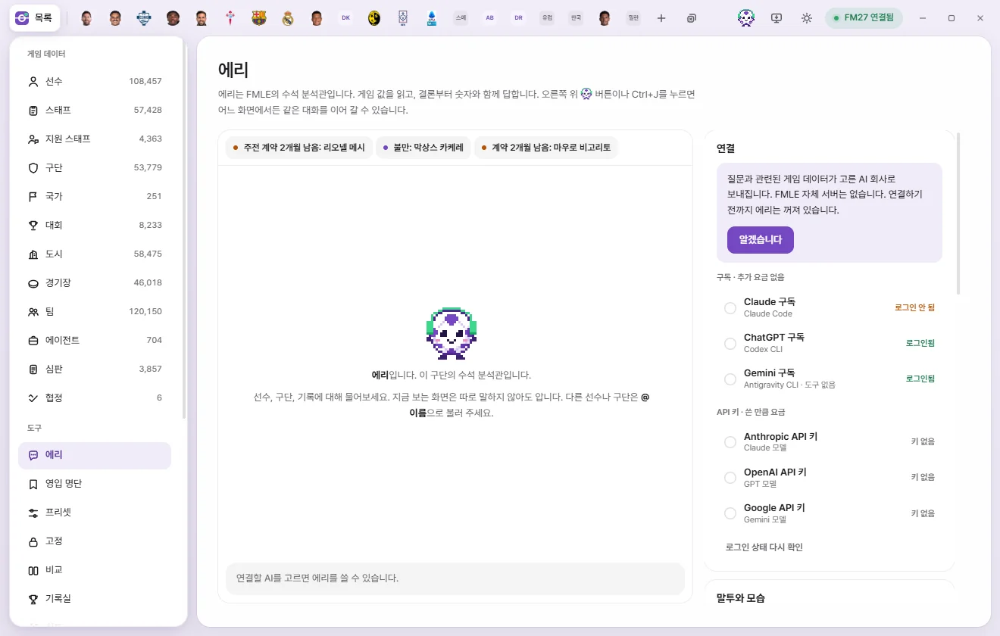
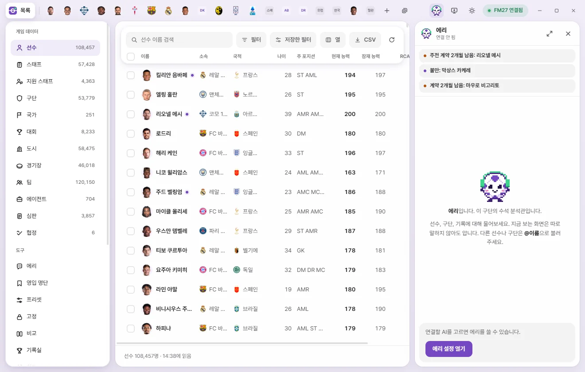
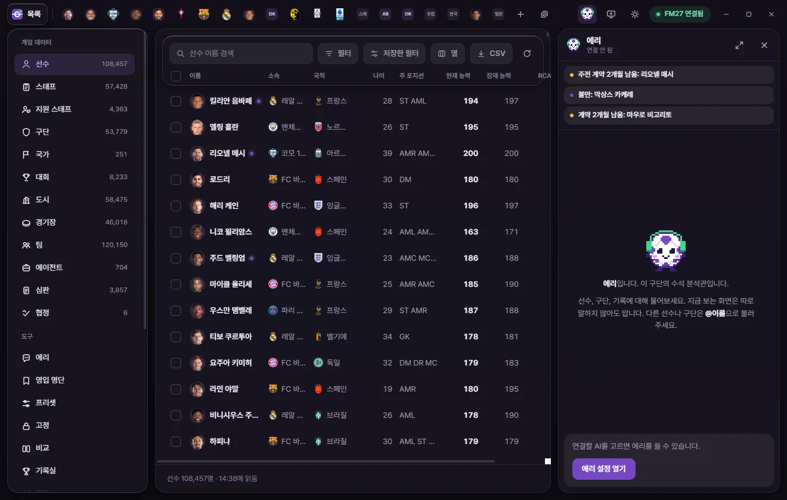
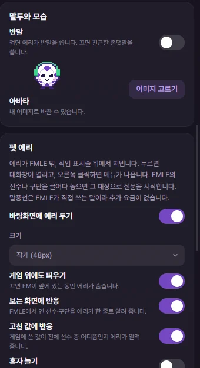

도구
에리
에리는 FMLE 안의 AI 수석 분석관입니다. 게임 값을 읽고 결론부터 숫자로 답하며, 하라고 하면 실행 카드를 띄웁니다. 내 Claude·ChatGPT·Gemini·Grok 구독, API 키, 또는 OpenAI 호환 서버(OpenRouter, 로컬 모델)에 직접 연결합니다.


에리는 어디에 있나요
에리는 두 곳에서 같은 대화를 보여 줍니다.
- 오른쪽 패널: 창 오른쪽 위의 에리 얼굴 단추를 누르거나 Ctrl+J를 누르면 어느 화면에서든 오른쪽에 패널이 열립니다. 다시 누르면 닫힙니다.
- 에리 화면: 왼쪽 도구의 '에리'를 누르면 큰 대화 화면과 함께 연결·말투·펫·방침 메모 같은 설정이 오른쪽에 보입니다. 패널 머리의 '전체 화면과 설정' 단추로도 옵니다.
대화는 세이브마다 따로 남습니다. 게임에서 다른 세이브를 열면 그 세이브의 대화로 바뀝니다. 연결할 AI를 바꿔도 대화는 이어집니다.



처음 연결하기
연결하기 전에는 에리가 꺼져 있습니다. FMLE에는 자체 서버가 없고, 질문은 내가 고른 AI 회사로 바로 갑니다.
- 왼쪽 도구에서 '에리'를 엽니다.
- 오른쪽 '연결' 카드의 안내를 읽고 알겠습니다를 누릅니다. 질문과 관련된 게임 데이터가 고른 AI 회사로 보내진다는 안내입니다.
- 아래 여덟 가지 중 하나를 고릅니다.
- 구독 연결이면 설치하고 연결(이미 깔려 있으면 로그인하기)을 누르고, 열린 창과 브라우저에서 구독 계정으로 로그인합니다(구독으로 연결). API 키 연결이면 'API 키' 칸에 키를 붙여 넣고 저장을 누릅니다.
- 필요하면 모델과 추론을 고릅니다.
| 연결 | 화면 아래 글 | 요금 |
|---|---|---|
| Claude 구독 | Claude Code | 추가 요금 없음(구독 한도에서 빠짐) |
| ChatGPT 구독 | Codex CLI | 추가 요금 없음(구독 한도에서 빠짐) |
| Gemini 구독 | Antigravity CLI · 도구 없음 | 추가 요금 없음(구독 한도에서 빠짐) |
| Grok 구독 | Grok Build | 추가 요금 없음(구독 한도에서 빠짐) |
| Anthropic API 키 | Claude 모델 | 쓴 만큼 그 회사에 요금 |
| OpenAI API 키 | GPT 모델 | 쓴 만큼 그 회사에 요금 |
| Google API 키 | Gemini 모델 | 쓴 만큼 그 회사에 요금 |
| 직접 연결 | OpenAI 호환 API · OpenRouter, 로컬 모델 | 그 서비스의 요금(로컬 모델은 없음) |
구독은 이미 내는 월 구독 안에서 쓰고, 한도에 닿으면 그 회사가 정한 시간까지 기다립니다. API 키는 그 회사 계정에 충전한 돈에서 쓴 만큼 나가고, 답마다 비용이 보입니다.
구독으로 연결
구독 연결은 내 PC에 깔린 Claude Code, Codex CLI, Antigravity CLI, Grok Build를 FMLE가 질문마다 한 번씩 실행해서 답을 받습니다. 로그인은 그 프로그램에서 직접 하고, FMLE는 로그인 정보를 만지지 않습니다. 사용량은 그 구독의 한도에서 빠지고, 한도에 닿으면 그 회사의 메시지를 그대로 보여 줍니다.
연결마다 오른쪽에 상태가 보입니다: '확인 중', '설치 안 됨', '로그인 안 됨', '로그인됨', '설치됨'.
버튼 하나로 설치와 로그인: 고른 구독이 '설치 안 됨'이면 설치하고 연결, '로그인 안 됨'이면 로그인하기가 보입니다.
- 단추를 누르면 검은 창(PowerShell)이 열립니다. 프로그램이 없으면 그 회사의 공식 설치 명령으로 먼저 설치합니다.
- 이어서 로그인이 시작되고 브라우저가 열립니다. 쓰시는 구독 계정으로 로그인하거나 확인을 누릅니다. Gemini(Antigravity)는 로그인 뒤 입력 칸이 보이면
/quit를 입력하거나 창을 닫습니다. - 그동안 단추는 '로그인을 기다리는 중'으로 바뀝니다. FMLE가 몇 초마다 확인하다가 로그인되면 알아서 그 연결로 바꾸고 "연결했습니다"를 띄웁니다(15분까지 기다립니다).
창이 안 보이면 작업 표시줄을 확인하세요. 직접 설치하거나 로그인했다면 로그인 상태 다시 확인을 누르면 됩니다.
최신 판으로 업데이트: 깔린 프로그램이 오래된 판이면 FMLE가 쓰는 옵션이 없어 답을 받지 못합니다. 이때 대화에 "오래된 판" 안내가 나옵니다. 연결 카드의 최신 판으로 업데이트를 누르면 그 회사의 공식 설치 프로그램을 다시 실행하고, 끝나면 FMLE가 알려 줍니다.
ChatGPT 구독: npm으로 깐 Codex CLI가 없어도 ChatGPT의 Codex 데스크톱 앱이 깔려 있으면 그 안의 Codex를 씁니다.
답이 안 올 때: 프로그램이 브라우저 로그인을 기다리면 에리가 로그인하라고 알려 주고 멈춥니다. 4분 동안 아무 응답이 없어도 멈춥니다. 그 프로그램을 직접 한 번 실행해서 로그인과 첫 실행 안내를 마친 뒤 다시 물어 주세요.
Gemini 구독 연결은 FMLE 도구에 붙지 못합니다. 그래서 지금 화면과 @로 부른 선수·구단의 자료를 FMLE가 미리 읽어 질문에 함께 넣어 보냅니다. 조건 검색, 순위표, 경기 일정, 실행 카드 같은 FMLE 도구는 쓰지 못하고, 사진도 보낼 수 없습니다.
Grok 구독 연결은 FMLE 도구를 씁니다. 사진은 보낼 수 없습니다. 이 연결로 도는 Grok Build는 FMLE 도구 말고는 PC의 파일이나 명령을 쓰지 못하게 막아서 실행합니다.
API 키로 연결
- API 키: 키는 Windows 자격 증명 관리자에만 보관합니다. 화면에는 끝 4자리만 보입니다. 지우기를 누르면 확인한 뒤 그 연결의 키를 지웁니다.
- 월 한도 (달러): 처음 값은 10달러입니다. 이번 달 쓴 금액이 한도에 닿으면 질문을 보내지 않고, 답하는 도중에 닿으면 거기서 멈춥니다. 0이면 한도가 없습니다. 칸 아래에 이번 달 금액과 답의 수가 보입니다.
- 모델: 모델 이름 옆에 입력·출력 100만 토큰당 달러 가격이 보입니다. 맨 위가 추천 모델입니다.
요금은 그 회사 계정에 바로 청구됩니다. 키가 틀리거나 크레딧이 없으면 그 회사가 알려 준 이유를 대화에 보여 줍니다.
직접 연결 (OpenRouter, 로컬 모델)
OpenAI의 Chat Completions 형식을 받는 서버라면 어디든 붙습니다. OpenRouter 같은 중개 서비스, 내 PC의 Ollama·LM Studio·vLLM 같은 로컬 모델 서버가 그렇습니다.
- 연결에서 직접 연결을 고릅니다.
- API 주소에
/chat/completions앞까지 넣습니다. 예:https://openrouter.ai/api/v1,http://localhost:11434/v1(Ollama),http://localhost:1234/v1(LM Studio). - 모델 이름을 넣습니다. 목록 불러오기를 누르면 서버가 알려 주는 모델을 칸에서 고를 수 있습니다.
- 가격(백만 토큰당 달러)은 월 한도와 답마다 비용에만 씁니다. 로컬 모델은 0으로 두면 됩니다.
- 연결 설정 저장을 누릅니다. 서버에 키가 필요하면 아래 'API 키 (필요할 때만)'에 넣습니다.
- 에리가 게임 값을 읽으려면 도구 호출(tools)을 지원하는 모델이어야 합니다.
- http 주소는 이 PC와 집 안 네트워크 주소만 쓸 수 있습니다. 인터넷 서버는 https 주소를 넣어 주세요.
- 키는 Windows 자격 증명 관리자에 두고, 저장한 주소의 서버에만 보냅니다. 서버 주소가 바뀌면 예전 키를 지웁니다.
모델과 추론
- 모델: 구독 연결은 맨 위가 'Claude Code 설정 그대로'처럼 그 프로그램의 기본값입니다.
- 추론: '모델 기본값', 낮음, 보통, 높음(모델에 따라 아주 높음, 최대까지)에서 고릅니다. 높을수록 깊게 생각하지만 답이 늦고, 구독 한도를 더 쓰거나 요금이 더 나옵니다. 추론 단계가 없는 모델은 이 칸이 보이지 않습니다.
패널 머리와 입력 칸 아래에 지금 연결·모델·추론과 이번 달 금액(구독이면 '추가 요금 없음')이 보입니다.
질문하기
- 아래 입력 칸에 질문을 씁니다.
- Enter나 보내기 단추를 누릅니다. 줄을 바꾸려면 Shift+Enter를 누릅니다.
- 에리가 답하는 동안 '선수 정보 읽는 중', '조건으로 거르는 중'처럼 하는 일이 보입니다. 멈추려면 네모 단추(멈추기)를 누릅니다.
지금 보는 화면은 따로 말하지 않아도 됩니다. 입력 칸 아래 왼쪽에 보이는 화면 이름(예: '리오넬 메시 · 통계')이 질문과 함께 갑니다. 목록이면 검색어, 필터 수, 고른 줄 수도 함께 갑니다.
다른 선수나 구단은 @이름으로 부릅니다. @ 뒤에 두 글자 이상 쓰면 선수 6명, 구단 3곳까지 후보가 뜹니다. 화살표로 고르고 Enter나 Tab으로 넣습니다. Esc는 후보를 닫습니다.
답 읽기
- 결론을 먼저, 근거는 숫자로 답합니다. '자세히'라고 하면 길게 답합니다.
- 답에 나온 선수·구단 이름은 링크입니다. 누르면 그 탭이 열립니다.
- 숨은 값 표시는 게임이 감독에게 숨기는 값(현재 능력(CA), 잠재 능력(PA), 숨은 능력치, 성격)에 기댄 말이라는 뜻입니다.
- 세이브 값으로 확인할 수 없는 게임 규칙은 "FM 일반 지식으로는…"이라고 밝히고 답합니다.
- 답 아래 작은 줄에 에리가 읽은 것(예: '읽은 것: 선수 정보, 시즌 기록')과 쓴 토큰·금액이 보입니다. 구독이면 '추가 요금 없음'입니다.
구독 연결은 6분이 넘으면 '시간이 너무 오래 걸려 멈췄습니다'로 끝납니다. API 키 연결은 확인할 것이 너무 많으면 "질문을 좁혀 주세요"라는 말과 함께 거기까지 답합니다.
무엇을 물을 수 있나요
에리는 FMLE와 게임에서 읽을 수 있는 것은 묻지 않고 읽습니다. 예를 들면 이런 것입니다.
| 묻는 것 | 예 |
|---|---|
| 선수·구단 정보 | 능력치, 계약, 시즌 기록, 경력, 선수단 |
| 조건으로 찾기·세기 | "21세 이하에 PA 170 이상 선수", "이적 명단에 오른 ST 중 CA가 가장 높은 선수" |
| 순위표와 예정 이적 | 리그 순위표, 게임이 합의한 예정 이적 |
| 경기 일정·결과 | 모든 대회의 지난 경기와 다가올 경기, 점수(연장·승부차기 포함), 경기장, 관중 |
| 대회 규정 | 등록 인원, 구단 육성·자국 육성 최소 인원, 외국인·비EU 한도, 임대 한도, 경기 명단 규칙, 주급 상한. 규정에 붙은 나이·나라 값은 아직 읽지 못합니다 |
| 기록 | 기록실의 리그 기록 순위, 구단 기록 |
| 전술 | 내 전술, 다른 구단이 쓴 포메이션·자주 쓰는 포메이션 |
| 선수의 관심 | 데려올 수 있는 선수만 보기 |
| 영입 추천 | 내 구단에 필요한 자리와 후보(영입 추천 카드) |
| FMLE 쓰는 법 | 칸 이름, 기능 위치 |
| 화면 열기 | "보여 줘", "열어 줘": 탭, 조건을 건 목록, 영입 명단, 비교 화면을 바로 엽니다 |
아직 대진이 정해지지 않은 컵 경기, 게임이 보관 파일로 옮긴 오래된 시즌의 경기, 득점자·평점 같은 경기 안 기록은 읽지 못합니다.
사진 첨부
게임 화면을 찍은 사진 등을 함께 보낼 수 있습니다.
- 입력 칸 아래 클립 단추(사진 첨부)를 누르거나, 입력 칸에 붙여 넣거나(Ctrl+V), 입력 칸에 끌어다 놓습니다.
- 한 번에 4장까지 보냅니다. PNG, JPEG, WEBP, GIF를 받습니다. 큰 사진은 한 변 2,000픽셀 안으로 줄여 보냅니다.
- 보내기 전에는 사진의 ✕로 뺄 수 있습니다. 글 없이 사진만 보내면 "이 사진을 봐 주세요."로 묻습니다.
- 대화에는 작은 미리보기만 남고 사진 자체는 남기지 않습니다.
- Gemini 구독과 Grok 구독 연결은 사진을 보낼 수 없습니다.
알림
대화 위에 내 구단에 대한 알림이 최대 6개 뜹니다. 알림은 AI가 아니라 FMLE가 직접 게임을 읽어 만드는 것이라 요금이 들지 않습니다.
| 알림 | 뜨는 때 |
|---|---|
| 주전 계약 n개월 남음 / 계약 n개월 남음 | 계약이 6개월 안에 끝나는 선수(주전 11명은 '주전'이 붙음) |
| 이적 요청 | 이적을 요청한 선수 |
| 장기 부상 | 최대 28일 이상 빠지는 부상 |
| 불만 | 선수단 앞쪽 18명 가운데 불만이 있는 선수 |
알림을 누르면 그 내용으로 에리에게 질문합니다(예: "재계약할지, 보낼지, 대체자를 찾을지 판단해 주세요"). 이때부터는 보통 질문과 같이 연결을 씁니다.
실행 카드
에리는 혼자 게임이나 FMLE를 바꾸지 않습니다. "바꿔 줘", "넣어 줘"처럼 하라고 할 때만 답 아래에 실행 카드를 띄웁니다. 카드의 실행을 누르기 전에는 아무것도 바뀌지 않습니다.
| 카드 종류 | 하는 일 | 되돌리기 |
|---|---|---|
| 값 편집 | 선수 등의 값을 FMLE 편집 화면의 저장과 같은 방식으로 씁니다 | 됨 |
| 게임 에디터 | ⚡ 메뉴의 이적·임대·계약 해지 같은 행동 | 없음 |
| 치트 | 치트 화면에 규칙을 넣거나 스위치를 켭니다 | 됨 |
| 영입 명단 | FMLE 영입 명단에 넣고, 원하면 게임 폴더에 .fmf로 내보냅니다 | 됨(내보낸 파일은 남음) |
| 프리셋 | 저장한 프리셋을 여러 명에게 적용합니다 | 됨(게임 에디터 행동이 든 프리셋은 그 부분만 없음) |
| 고정 | 값을 지금 게임 값으로 고정하거나 풉니다 | 됨 |
| 즐겨찾기 | 즐겨찾기에 넣거나 뺍니다 | 됨 |
| 저장한 필터 | 조건을 저장한 필터로 남깁니다 | 됨 |
| FMLE 설정 | 금액 통화, CA·PA 숨기기, 급여 표시를 바꿉니다 | 됨 |
| CSV | 조건을 건 목록을 다운로드 폴더에 CSV로 저장합니다 | 없음 |
| 묶음 | 위의 일 여러 개를 한 장에 담습니다 | 단계마다 |
에리의 연결, API 키, 월 한도는 카드로 바꿀 수 없습니다. 사용자만 바꿉니다.
실행과 확인
- 카드에서 무엇이 바뀌는지(대상 이름, 바뀌기 전 → 후)를 확인합니다.
- 실행을 누릅니다. 필요 없으면 버리기를 누릅니다.
카드 머리에 백업 확인 표시가 있으면 단추가 확인하고 실행이 되고, 누르면 '세이브를 백업해 두셨습니까?'를 먼저 묻습니다. 이적·임대·계약 해지, 10명(개)이 넘는 값 편집이나 프리셋, 게임 에디터 행동이 든 프리셋, 치트가 그렇습니다.
실행한 뒤 카드에는 '실행했습니다', '일부만 실행했습니다', '실행하지 못했습니다'와 된 수(예: 3/4)가 보입니다. 못 쓴 대상 옆에는 이유가 붙습니다.
| 이유 | 뜻 |
|---|---|
| 그사이 값이 바뀌어서 쓰지 않았습니다 | 카드를 만든 뒤 게임 값이 달라졌습니다 |
| 게임에서 찾지 못했습니다 | 그 대상이 지금 게임에 없습니다 |
| 쓸 수 없는 값입니다 | 범위를 벗어난 값입니다 |
| 쓴 뒤 확인하지 못했습니다 | 쓴 뒤 다시 읽은 값이 다릅니다 |
| 게임이 꺼져 있습니다 / 게임에 쓸 권한이 없습니다 | FM27 연결이나 권한을 확인하세요 |
되돌리기를 누르면 실행한 것을 되돌립니다. 값 편집은 그사이 다시 바뀐 대상은 그대로 둡니다. 영입 명단 카드를 되돌려도 게임 폴더에 내보낸 .fmf 파일은 남습니다.
여러 단계를 한 장으로(묶음 카드)
여러 일을 한꺼번에 시키면 단계에 번호가 붙은 묶음 카드 한 장이 됩니다.
- 되돌릴 수 없는 단계는 저절로 맨 뒤로 가고 '되돌리기 없음'이 붙습니다.
- 실행을 누르면 단계를 차례로 하다가 실패한 단계에서 멈춥니다. 앞에서 된 단계는 그대로 둡니다. 단계마다 '됨', '멈춤', '되돌림'과 멈춘 이유가 보입니다.
- 멈춘 뒤에는 남은 단계 실행으로 멈춘 단계부터 다시 합니다.
- 되돌리기는 된 단계를 뒤에서부터 되돌립니다. 되돌릴 수 없는 단계는 그대로 남습니다.
에리 작업 기록
에리 화면 오른쪽 '에리 작업 기록' 카드에 실행 카드로 한 일이 최근 30개까지 보입니다. 되돌릴 수 있는 일은 여기서도 되돌리기를 누를 수 있습니다.
펫 에리의 대화창에서 누른 카드는 FMLE 창으로 넘어가서 그곳에서 확인을 묻고 실행합니다.
추천 카드 (영입 후보)
"영입할 선수 추천해 줘"처럼 물으면 답 아래에 영입 후보 카드가 붙습니다. 내 구단이면 지금 전술의 자리를 기준으로 봅니다.
- 머리에 구단, 이적 예산, 주급 한도가 보입니다.
- 자리마다 지금 주전·후보 수, 조건을 통과한 선수 수, 가격을 몰라서 뺀 선수 수가 보입니다.
| 열 | 뜻 |
|---|---|
| 선수 | 이름(누르면 탭), 구단, 나이, 이적 명단 여부 |
| 능력 | 그 자리에서의 FMLE 능력 점수와 티어. 마우스를 올리면 PA에 닿았을 때 점수도 보입니다 |
| 점수 | 0~100 영입 점수 |
| 이적료·주급 | 이적료는 선수의 이적 요구 금액, 주급은 지금 주급의 1.2배로 봅니다 |
| 올 가능성 | FMLE가 추정한 5~95 지수입니다. 확률이 아니고 게임의 계산도 아닙니다 |
등록 규정은 따지지 않습니다. 후보 n명 영입 명단에 넣기를 누르면 그 자리의 후보를 영입 명단에 넣습니다. 이름을 오른쪽 클릭하면 영입 명단, 즐겨찾기, ⚡ 이적 같은 메뉴가 바로 나옵니다.
구단 방침 메모
에리가 추천하고 판단할 때 따르는 메모입니다(예: '22세 이하 위주로 영입'). 이 세이브에만 해당합니다.
- 에리 화면 오른쪽 '구단 방침 메모'에 쓰고 넣기를 누릅니다. 고치기, 지우기로 바꿉니다.
- 대화 중에 에리가 메모를 제안하면 대화 아래에 '에리가 제안한 방침 메모'가 뜹니다. 메모에 넣기 또는 버리기를 누릅니다.
- 에리는 메모와 어긋나는 일을 시키면 카드를 만들기 전에 그 점을 말하도록 되어 있습니다.
말투와 모습
- 반말: 켜면 반말, 끄면 친근한 존댓말을 씁니다.
- 아바타: 이미지 고르기로 내 이미지로 바꿉니다. 기본으로는 축구공 에리로 돌립니다.
펫 에리
에리를 FMLE 창 밖, 작업 표시줄 위에 띄웁니다. 에리 화면의 '펫 에리' 카드에서 바탕화면에 에리 두기를 켭니다.


| 설정 | 하는 일 |
|---|---|
| 크기 | 작게(48px), 보통(72px), 크게(96px) |
| 게임 위에도 띄우기 | 끄면 FM이 앞에 있는 동안 에리가 숨습니다 |
| 보는 화면에 반응 | FMLE에서 연 선수·구단을 에리가 말풍선 한 줄로 알려 줍니다 |
| 고친 값에 반응 | 게임에 쓴 값이 전체 선수 중 어디쯤인지 말풍선으로 알려 줍니다 |
| 혼자 놀기 | 구르기, 공놀이, 졸기, 커서 쳐다보기 |
| FMLE 창을 닫아도 남기 | FMLE 창을 닫으면 알림 영역으로 내려가고 에리는 남습니다 |
- 누르면 작은 대화창이 열립니다. 패널과 같은 대화입니다. 대화창 머리의 핀 단추로 항상 위에 둘 수 있습니다.
- 오른쪽 클릭 메뉴: 대화창 열기, FMLE 열기, 크기, 혼자 놀기, 잠깐 숨기기, FMLE 끝내기.
- 끌어서 아무 곳에나 옮길 수 있고, 놓으면 작업 표시줄 위로 내려옵니다.
- 펫을 켠 동안 FMLE 목록의 선수·구단 줄이나 이름 링크를 에리에게 끌어다 놓으면 그 대상으로 질문을 시작합니다.
- 알림 말풍선의 물어보기, 보는 화면 말풍선의 에리에게 묻기로 바로 질문할 수 있습니다.
- 알림 영역 아이콘 메뉴: FMLE 열기, 에리와 대화, 에리 보이기, FMLE 끝내기.
말풍선은 FMLE가 직접 쓰는 말이라 요금이 들지 않습니다.
대화 지우기
에리 화면 오른쪽 '대화' 카드에 이 세이브의 대화 수가 보입니다. 대화 지우기를 누르면 확인한 뒤 이 세이브의 대화를 모두 지웁니다. 구단 방침 메모는 남습니다. 세이브마다 최근 메시지 400개까지 남깁니다.
개인정보: 무엇이 어디로 가나요
FMLE에는 자체 서버가 없습니다. 질문할 때만, 고른 연결의 회사로 보냅니다.
질문마다 함께 가는 것
- 질문 글과 첨부한 사진
- 게임 날짜, 세이브 이름, 내 구단 이름
- 지금 화면(탭 이름, 대상 이름, 페이지, 목록의 검색어·필터 수·고른 줄 수)
- @로 부른 선수·구단, 화면 통화
- 구단 방침 메모
- 최근 대화 6개(하나에 280자까지, 실행 카드의 실행 여부 포함)
- 에리의 역할과 말투 안내
답하는 동안 가는 것: 에리가 답하려고 읽은 게임 데이터(선수 값, 순위표, 경기 일정 등)가 그 회사의 모델로 넘어갑니다. Gemini 구독 연결은 화면의 대상과 @로 부른 대상의 자료를 FMLE가 미리 읽어 질문에 붙여 보냅니다.
받는 곳
| 연결 | 받는 곳 |
|---|---|
| Anthropic API 키 | Anthropic(api.anthropic.com) |
| OpenAI API 키 | OpenAI(api.openai.com) |
| Google API 키 | Google(generativelanguage.googleapis.com) |
| Claude·ChatGPT·Gemini·Grok 구독 | 내 PC의 Claude Code·Codex CLI·Antigravity CLI·Grok Build가 내 로그인으로 그 회사에 보냅니다 |
구독 연결은 빈 작업 폴더에서 FMLE 도구만 쓸 수 있게 실행합니다. 그 프로그램의 다른 도구(명령 실행, 파일 읽기 등)는 끕니다. FMLE 도구는 이 PC 안에서만 열리고, FMLE가 실행마다 넘긴 열쇠가 있는 요청에만 답합니다.
보내지 않는 것: 위의 알림과 펫 에리의 말풍선은 FMLE가 직접 만들어서 아무 데도 보내지 않습니다.
이 PC에 남는 것
| 무엇 | 어디 |
|---|---|
| 대화, 방침 메모, 에리 작업 기록 | FMLE 데이터 폴더의 eri 폴더, 세이브마다 따로 |
| 이번 달 사용량(토큰, 금액) | FMLE 데이터 폴더의 eri 폴더 |
| API 키 | Windows 자격 증명 관리자 |
| 연결, 모델, 추론, 월 한도, 반말, 아바타 | 이 PC의 FMLE 저장소(모든 세이브에 같음) |
첨부한 사진은 작은 미리보기만 대화에 남습니다.